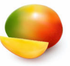
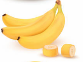
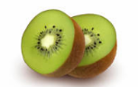

Mango
El mango es una fruta tropical dulce y jugosa, muy popular en climas cálidos.

El mango es una fruta tropical dulce y jugosa, muy popular en climas cálidos.

El plátano es una fruta rica en potasio y energía natural.

El kiwi es una fruta pequeña de sabor ligeramente ácido y muy rica en vitamina C.
